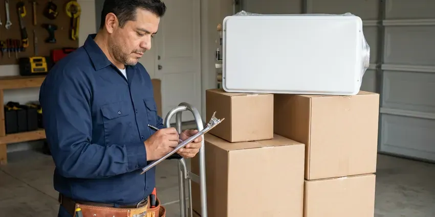

Basement Leak Repair in Des Plaines, IL
Facing a damp or flooded basement in Des Plaines, IL? HVM Plumbing offers expert solutions for all types of basement leaks.
- Long-Lasting Solutions
- Pipe & Drain Repairs
- Fast Leak Detection
- Foundation Specialists

Stop the Water and Protect Your Lower Level in Des Plaines, IL.
We provide fast and effective services to protect your home from water damage.
Your Local Pros for Basement Leak Repair in Des Plaines, IL
HVM Plumbing specializes in comprehensive basement leak repair. We understand the challenges that Illinois' soil conditions and storms pose to foundations, leading to leaks, water intrusion, and potential structural damage. Heavy spring and summer storms often overwhelm older sewer systems in Illinois, causing basement backups through floor drains.
Our expertise includes:
- Exterior waterproofing membrane installation
- Sump Pump Installation & Repair
- Hydrostatic pressure relief systems

Additional Plumbing Maintenance Services in Des Plaines, IL
Our maintenance and specialty plumbing services in Des Plaines, IL protect your home year-round and extend the life of every system.


Customers
Why Choose HVM Plumbing for Basement Leak Repair in Des Plaines, IL?
Our expertise in local Illinois building codes and common foundation types means we can correctly diagnose and fix your basement leaks with confidence.
- Local Expertise, We understand the particular soil conditions, climate patterns, and typical foundation types found in Des Plaines.
- Clean Repairs, We protect finished floors and walls and open only what we need to access the pipe.
- Lasting Solutions, Our repairs are designed to withstand Illinois weather, including heavy rains and changing soil moisture.
Citywide Coverage
No matter where you are located in Des Plaines, our team is equipped to handle your basement leak repair needs. We prioritize fast response times to prevent further damage to your property.
Experienced Team
Our team of licensed plumbers and foundation specialists has extensive experience with basement leak repair. They are trained in current techniques and use modern equipment to ensure a precise and durable fix.
Safety-First Approach
We use code-approved materials for every repair and install backwater valves and sump discharge lines to local requirements. If mold is visible, we guide you on safe remediation before walls are closed.
Trusted Certified Des Plaines Plumbing Services Professionals
At HVM Plumbing, we take pride in providing certified plumbing services throughout Des Plaines, IL. Backed by recognized industry credentials, our experienced plumbers combine technical skill with genuine customer care. Whether it is repair, installation, or maintenance, we follow strict safety and quality standards to deliver lasting results you can trust.
Call Us Now PHCC Plumbing Contractor Recognition
PHCC Plumbing Contractor Recognition Better Business Bureau (BBB) Accreditation
Better Business Bureau (BBB) Accreditation Angi Certified Pro
Angi Certified Pro ISO 9001 Quality Management Certification
ISO 9001 Quality Management CertificationProven Basement Leak Repair Services in Des Plaines, IL
Waterproofing for Older Illinois Homes in Des Plaines, IL
Many older homes in Des Plaines and across Illinois were not built with modern waterproofing techniques, making them more prone to basement leaks. Lead service lines remain in many older neighborhoods, and state rules now call for utilities to replace them over time. HVM Plumbing specializes in retrofitting older foundations with current solutions, addressing issues like failing mortar, porous concrete, and inadequate drainage. We preserve the integrity of historic structures while providing modern protection.

Hydrostatic Pressure Management in Des Plaines, IL
Heavy rain can lead to significant hydrostatic pressure against basement walls, forcing water through concrete. Heavy spring and summer storms often overwhelm older sewer systems in Illinois, causing basement backups through floor drains. HVM Plumbing installs interior and exterior drainage systems, including French drains and weeping tile systems, to alleviate this pressure. We also install sump pump systems to efficiently remove collected water, keeping your basement dry.
Emergency Basement Leak Repair in Des Plaines, IL
A sudden basement leak can be a crisis, especially during heavy rains. HVM Plumbing provides emergency basement leak repair services in Des Plaines, IL to address urgent water intrusion issues fast. Our rapid response team is equipped to perform immediate diagnostics and temporary or permanent repairs, preventing further damage to your property and belongings.
Sump Pump Installation & Repair in Des Plaines
A reliable sump pump is crucial for preventing basement flooding, particularly in areas with high water tables or heavy rainfall. We offer expert installation of high-capacity sump pumps, including battery backup systems, to ensure continuous protection. Our technicians also provide fast repair and maintenance services for existing sump pumps, ensuring they operate effectively when you need them most.
Foundation Crack Repair in Des Plaines
Foundation cracks are a common entry point for basement water leaks, especially in homes built on soil that swells and shrinks. Much of Illinois sits on heavy clay and rich prairie soil that holds water, which puts pressure on basement walls and drain tile. We use epoxy and polyurethane injection techniques to seal these cracks, preventing water infiltration and reinforcing your foundation. Our methods are tailored to the specific type and size of the crack, ensuring a durable repair.
Exterior Waterproofing Solutions in Des Plaines, IL
For complete basement leak prevention, exterior waterproofing involves excavating around your foundation and applying waterproof membranes or coatings. This creates a strong barrier against moisture intrusion from the outside. While more involved, this method offers superior long-term protection against water damage, especially for older homes in Des Plaines.
Interior Drainage Systems in Des Plaines
When exterior excavation isn't practical, interior drainage systems provide an effective solution for managing basement leaks. We install perimeter drains along the basement walls, collecting water before it can surface and directing it to a sump pump for removal. This system is less disruptive and can be a cost-effective way to dry out a wet basement.

Water Damage Assessment in Des Plaines, IL
Before any repair, our team performs a thorough water damage assessment to identify the source and extent of your basement leak. This includes inspecting for mold growth, structural concerns, and damaged finishes. Our complete approach ensures that all related issues are addressed for a full restoration of your Des Plaines basement.
Basement Leak Repair Near Me in Des Plaines, IL
Choosing a local expert like HVM Plumbing means you get a team familiar with Des Plaines's plumbing and foundation needs. We're your neighbors, committed to providing quality basement leak repair solutions right here in your community.
A local plumber also understands how the soil and storms around Des Plaines affect lower levels. Much of Illinois sits on heavy clay and rich prairie soil that holds water, which puts pressure on basement walls and drain tile. We build those conditions into every repair we recommend.
HVM Plumbing at a Glance
- Licensed and insured plumbers serving Des Plaines, IL
- 24/7 emergency service with same-day scheduling
- Clear written estimates, no hidden fees
- 4.8-star rated by 528+ Illinois customers
Des Plaines Map
Des Plaines Information
- Population
- 58,010
- Area codes
- 847/224/773
- Service area
- Des Plaines and communities within 40 miles
- Nearby
- Mount Prospect, Glenview, Arlington Heights, Skokie
Basement leak repair is crucial for homes in Des Plaines, IL, because shifting soil can crack foundations and heavy rain raises hydrostatic pressure against the walls. Much of Illinois sits on heavy clay and rich prairie soil that holds water, which puts pressure on basement walls and drain tile.
Expert Services
Trust our professionals for reliable HVM Plumbing solutions in Des Plaines, IL.
Our Specialized Plumbing Services in Des Plaines, IL
At HVM Plumbing, we provide a complete range of plumbing services across Des Plaines, IL. From leak detection to full system installations, our team ensures fast, precise, and affordable service for both residential and commercial properties. Explore our core services below:




Professional plumbing installation, Des Plaines


How Our Basement Leak Repair Process Works in Des Plaines, IL
Our systematic approach ensures effective and lasting basement leak repair for your Des Plaines home.
Request a Quote
Contact HVM Plumbing at (773) 903-7643 to schedule an initial consultation. We will gather information about your basement leak and arrange for a convenient on-site inspection.
Thorough Inspection
Our technicians will visit your property to identify the source of the leak, assess the extent of the damage, and recommend the most effective repair strategy. We use advanced diagnostic tools to improve accuracy.
Customized Repair Plan
Based on our findings, we will present a detailed repair plan and a transparent estimate. We explain all options and answer your questions, ensuring you understand the proposed solutions.
Frequently Asked Questions About Basement Leak Repair in Des Plaines
Most basement plumbing leak repairs in Des Plaines cost $200 to $1,500, depending on the pipe and how hard it is to reach. Sump pump replacements run $600 to $1,800, and full interior drainage systems cost more. We give you a firm price before work starts.
Heavy storms dump a lot of water quickly, and the soil around the foundation cannot absorb it fast enough. Heavy spring and summer storms often overwhelm older sewer systems in Illinois, causing sewage backups through floor drains. The water then pushes through wall joints, cracks and pipe penetrations. Better grading, gutters and a sump system often solve it.
Common signs of a basement leak include damp spots on walls or floors, a musty odor, visible mold or mildew growth, white powdery efflorescence on concrete or masonry, pooling water, and warped baseboards or flooring. Don't ignore these indicators; addressing them early can prevent more significant issues.
Musty odors, damp carpet, peeling paint, white mineral deposits on walls and a rising water bill are all typical signs. Rust stains under water heaters or softeners also point to trouble. Call us if you see any of these.
The duration depends on the complexity of the repair. Simple crack injections might take a few hours, while more involved projects like interior or exterior drainage system installations can take several days to a week. We will provide an estimated timeline during your consultation in Des Plaines.
Yes, even small basement leaks create the ideal moist environment for mold and mildew to thrive. Mold can grow rapidly on organic materials like wood, drywall, and fabrics, leading to unpleasant odors and potential health issues. Addressing the leak promptly is crucial to prevent extensive mold contamination.
HVM Plumbing stands behind its work with comprehensive warranties on basement leak repairs. The specific warranty period and coverage depend on the type of repair performed, with options ranging from several years to lifetime guarantees on certain waterproofing systems. We discuss warranty details upfront.
Basement leak repair specifically addresses existing points of water entry, like sealing cracks or fixing drainage. Basement waterproofing is a broader term that covers all strategies, both proactive and reactive, to prevent water intrusion, including repairs and preventive measures like exterior membranes or improved grading. HVM Plumbing offers both in Des Plaines.
What People Are Saying About Our Plumbing Experts?

Mark T.
When our office needed drain cleaning, HVM Plumbing provided quick, reliable service. The plumber arrived on time and made sure every drain flowed perfectly before leaving. Very satisfied.
Drain Cleaning · Arlington Heights, IL
James P.
Our commercial plumbing system had a leak under the sink, and HVM Plumbing handled it professionally. The plumbers arrived quickly and restored everything without disruption to our customers.
Commercial Plumbing · Schaumburg, ILPatricia H.
We had a slab leak that two other companies could not find. HVM Plumbing located it in under an hour, explained our options, and the price matched the quote to the dollar.
Slab Leak Repair · Glenview, IL
Laura S.
I scheduled a water heater replacement, and the team made the process smooth and affordable. The new unit works perfectly, and they cleaned up after completing the job.
Water Heater Replacement · Skokie, ILRobert G.
The trenchless sewer replacement saved our front yard. They walked us through the camera inspection footage first so we knew exactly what we were paying for.
Sewer Line Replacement · Schaumburg, ILDaniel K.
A pipe burst at 11 pm and they actually answered. The plumber showed up within the hour, shut everything down, and had us back to normal the next morning. Could not ask for more.
Emergency Plumbing · Schaumburg, IL